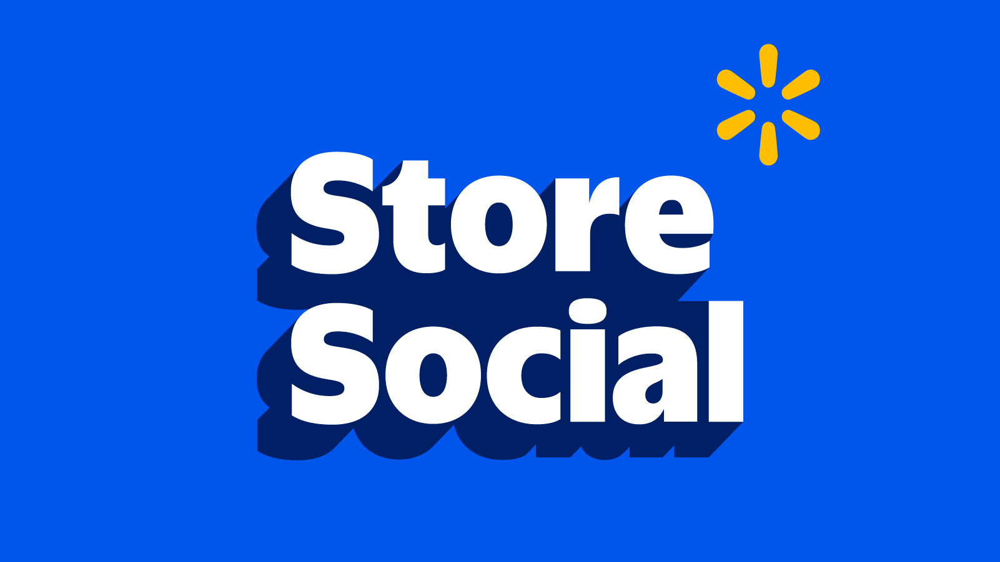
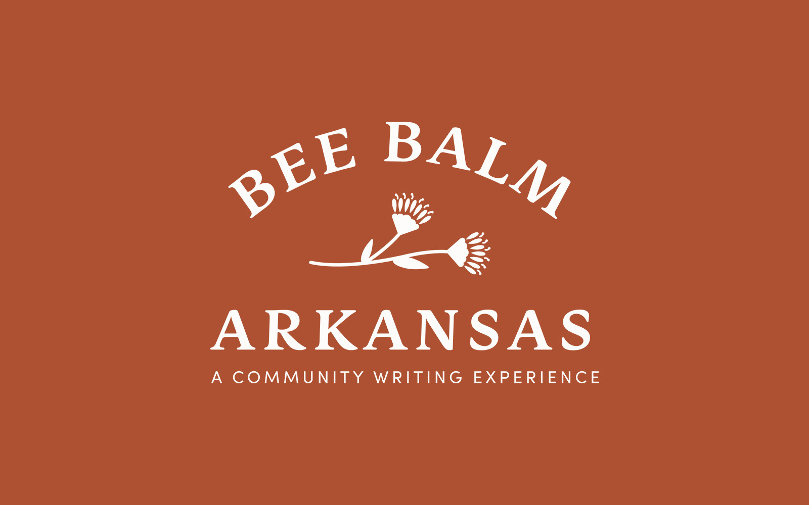
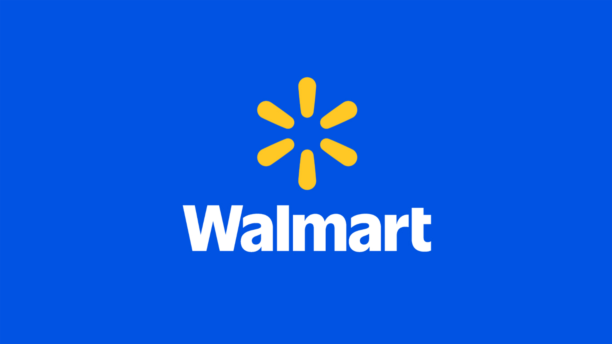

Store Social at Walmart
The brief system behind a 4,600-store social network
4,600 stores · millions of posts · billions of organic impressions

The brief system behind a 4,600-store social network
4,600 stores · millions of posts · billions of organic impressions

Growing a literary community in Fayetteville, AR
400+ writers · 28 events/yr · 30x Instagram growth

Editorial judgment for a 31M-follower Facebook page
31M followers · millions of engagements · zero media spend
I build the infrastructure behind content—the systems beneath the posts, videos, and episodes that help good work find its audience.
For Walmart, that means working across both ends of the content funnel: writing the briefs that guide content creation across a 4,600-store network, then sourcing the strongest of what that network produces and publishing it to a 31M-follower brand page. No media spend. My editorial judgment runs the full loop.
Fayetteville, AR has a literary community now—400+ writers, 28 annual events, and a podcast that aired on public radio, all built on no budget by volunteers. Writers there are still finding each other.
I got started at the University of Arkansas. Six years of making academic work legible to people outside it. Faculty research podcast for KUAF public radio—Short Talks from the Hill. Video and motion graphics for the Walton College of Business. A professor can explain their work perfectly to a room of peers, but getting it to land for everyone else is a different job. It was mine, and it's where my producer instinct set in.
Based in Boston, originally from the hills and hollers of Northwest Arkansas. When I'm not at it, I'm watching spooky movies with my dog Miko. He's the bravest one in the room and we both know it.
Either something caught your eye or you're very thorough. Whichever it is, say hi.
Or find me elsewhere: